No reconstruction adopted. Isolated overlap is not identity. Conditional A uses -14, B uses -15; all material and contact evidence retained. No verified physical identity. White isolated occupied contours, cyan visible contours, magenta enclosed bore, orange candidate core pixels hidden by neighbors.
Report · Reproduce · Joint search / Pareto IDs · All 40 core diagnostics · Error propagation · Complete occlusion ledger · Same-geography before/after
| Model | Core | Best isolated candidate | Actual modeled occluders | Review |
|---|---|---|---|---|
| R306 | C-1559-0252 | 15: isolated 70.4%; visible 2.4% | 20 (119 core px), 14 (81 core px) | photographic layers · arrays |
| R306 | C-1497-0271 | 0: isolated 84.8%; visible 84.8% | photographic layers · arrays | |
| R306 | C-1477-0290 | -9: isolated 48.1%; visible 8.4% | -7 (55 core px), -8 (43 core px), -1 (30 core px) | photographic layers · arrays |
| R306 | R282-1536-0239 | 8: isolated 93.9%; visible 78.2% | 7 (39 core px), 14 (20 core px) | photographic layers · arrays |
| R306 | R282-1537-0308 | 11: isolated 66.4%; visible 16.7% | 12 (238 core px) | photographic layers · arrays |
| R306 | R282-1459-0316 | -8: isolated 57.3%; visible 57.3% | photographic layers · arrays | |
| focused3 | C-1559-0252 | 15: isolated 77.2%; visible 0.0% | 20 (152 core px), 14 (75 core px) | photographic layers · arrays |
| focused3 | C-1497-0271 | 0: isolated 97.9%; visible 97.9% | photographic layers · arrays | |
| focused3 | C-1477-0290 | -9: isolated 55.6%; visible 4.7% | -7 (96 core px), -1 (57 core px), -8 (11 core px) | photographic layers · arrays |
| focused3 | R282-1536-0239 | 8: isolated 96.0%; visible 83.3% | 14 (41 core px), 7 (7 core px) | photographic layers · arrays |
| focused3 | R282-1537-0308 | 12: isolated 72.9%; visible 72.9% | photographic layers · arrays | |
| focused3 | R282-1459-0316 | -8: isolated 61.4%; visible 57.6% | -7 (11 core px) | photographic layers · arrays |
| narrow | C-1559-0252 | 14: isolated 82.0%; visible 67.3% | 20 (43 core px) | photographic layers · arrays |
| narrow | C-1497-0271 | 0: isolated 81.2%; visible 81.2% | photographic layers · arrays | |
| narrow | C-1477-0290 | -9: isolated 53.7%; visible 5.3% | -7 (107 core px), -1 (34 core px), -8 (15 core px) | photographic layers · arrays |
| narrow | R282-1536-0239 | 8: isolated 86.5%; visible 74.5% | 7 (40 core px), 14 (5 core px) | photographic layers · arrays |
| narrow | R282-1537-0308 | 12: isolated 69.5%; visible 69.5% | photographic layers · arrays | |
| narrow | R282-1459-0316 | -15: isolated 63.7%; visible 24.4% | -14 (96 core px), -8 (20 core px) | photographic layers · arrays |
| R316 | C-1559-0252 | 14: isolated 99.7%; visible 78.6% | 20 (62 core px) | photographic layers · arrays |
| R316 | C-1497-0271 | 0: isolated 87.9%; visible 87.9% | photographic layers · arrays | |
| R316 | C-1477-0290 | -7: isolated 85.7%; visible 85.1% | -1 (2 core px) | photographic layers · arrays |
| R316 | R282-1536-0239 | 8: isolated 88.9%; visible 77.7% | 7 (38 core px), 14 (4 core px) | photographic layers · arrays |
| R316 | R282-1537-0308 | 12: isolated 63.3%; visible 63.3% | photographic layers · arrays | |
| R316 | R282-1459-0316 | -15: isolated 98.6%; visible 3.1% | -14 (212 core px), -8 (56 core px), -7 (14 core px) | photographic layers · arrays |
| hypothesis-A | C-1559-0252 | 14: isolated 98.3%; visible 76.9% | 20 (63 core px) | photographic layers · arrays |
| hypothesis-A | C-1497-0271 | 0: isolated 93.3%; visible 93.3% | photographic layers · arrays | |
| hypothesis-A | C-1477-0290 | -7: isolated 90.7%; visible 83.2% | -1 (24 core px) | photographic layers · arrays |
| hypothesis-A | R282-1536-0239 | 8: isolated 86.2%; visible 76.1% | 7 (35 core px), 14 (3 core px) | photographic layers · arrays |
| hypothesis-A | R282-1537-0308 | 12: isolated 70.6%; visible 70.6% | photographic layers · arrays | |
| hypothesis-A | R282-1459-0316 | -15: isolated 99.0%; visible 0.0% | -14 (215 core px), -8 (53 core px), -7 (24 core px) | photographic layers · arrays |
| hypothesis-B | C-1559-0252 | 14: isolated 87.4%; visible 85.4% | 20 (6 core px) | photographic layers · arrays |
| hypothesis-B | C-1497-0271 | 0: isolated 88.7%; visible 88.7% | photographic layers · arrays | |
| hypothesis-B | C-1477-0290 | -10: isolated 59.6%; visible 17.4% | -7 (131 core px), -9 (4 core px), -1 (1 core px) | photographic layers · arrays |
| hypothesis-B | R282-1536-0239 | 8: isolated 78.8%; visible 73.2% | 7 (21 core px) | photographic layers · arrays |
| hypothesis-B | R282-1537-0308 | 12: isolated 62.0%; visible 62.0% | photographic layers · arrays | |
| hypothesis-B | R282-1459-0316 | -15: isolated 67.1%; visible 46.1% | -14 (60 core px), -8 (2 core px) | photographic layers · arrays |
| hypothesis-C | C-1559-0252 | 14: isolated 98.0%; visible 74.8% | 20 (68 core px) | photographic layers · arrays |
| hypothesis-C | C-1497-0271 | 0: isolated 98.9%; visible 98.9% | photographic layers · arrays | |
| hypothesis-C | C-1477-0290 | -7: isolated 82.3%; visible 79.2% | -1 (10 core px) | photographic layers · arrays |
| hypothesis-C | R282-1536-0239 | 8: isolated 88.1%; visible 79.3% | 7 (26 core px), 14 (7 core px) | photographic layers · arrays |
| hypothesis-C | R282-1537-0308 | 12: isolated 73.5%; visible 73.5% | photographic layers · arrays | |
| hypothesis-C | R282-1459-0316 | -15: isolated 98.3%; visible 0.0% | -14 (213 core px), -7 (43 core px), -8 (34 core px) | photographic layers · arrays |
| joint-preserved | C-1559-0252 | 14: isolated 99.7%; visible 78.9% | 20 (61 core px) | photographic layers · arrays |
| joint-preserved | C-1497-0271 | 0: isolated 98.9%; visible 98.9% | photographic layers · arrays | |
| joint-preserved | C-1477-0290 | -7: isolated 91.0%; visible 87.9% | -1 (10 core px) | photographic layers · arrays |
| joint-preserved | R282-1536-0239 | 8: isolated 89.1%; visible 83.8% | 7 (16 core px), 14 (4 core px) | photographic layers · arrays |
| joint-preserved | R282-1537-0308 | 4: isolated 70.4%; visible 0.0% | 12 (194 core px), 5 (143 core px) | photographic layers · arrays |
| joint-preserved | R282-1459-0316 | -15: isolated 98.6%; visible 0.0% | -14 (223 core px), -8 (38 core px), -7 (30 core px) | photographic layers · arrays |
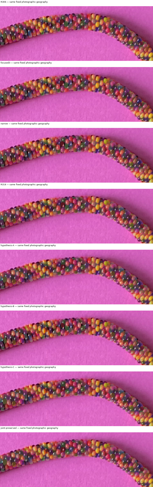
White: isolated boundary. Cyan: visible boundary. Orange: candidate core hidden by other bodies. A matching isolated outline does not identify the real bead.
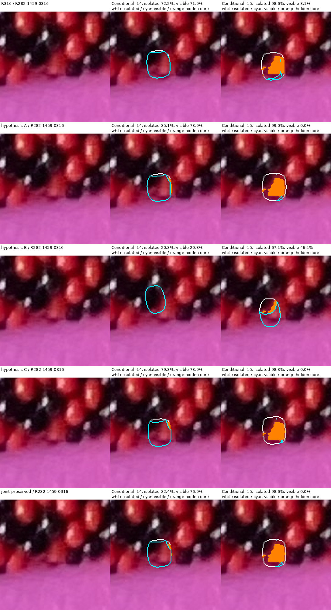
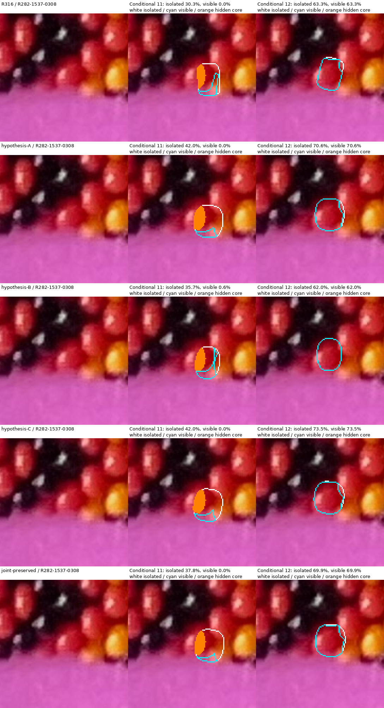
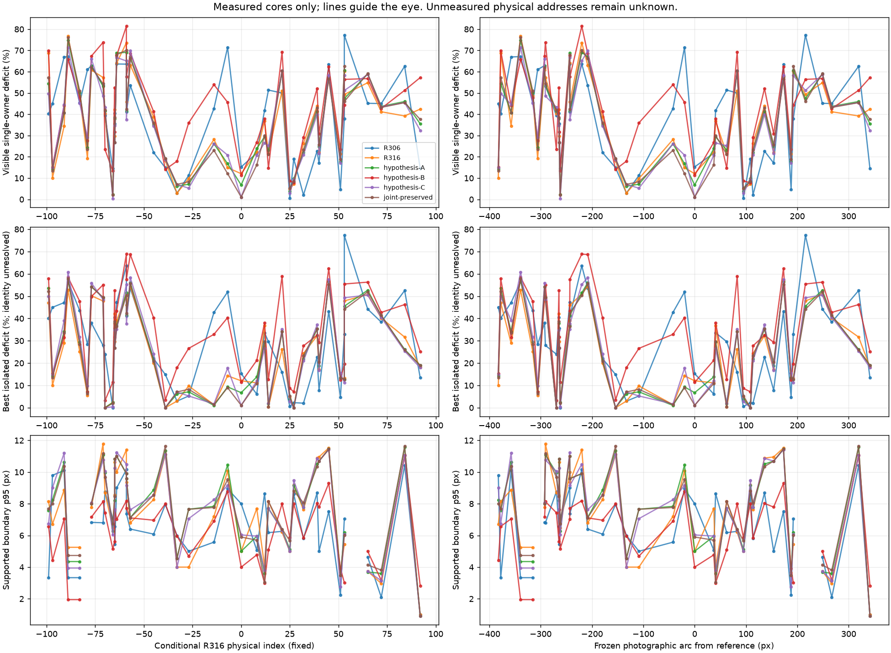
C-1497-0271
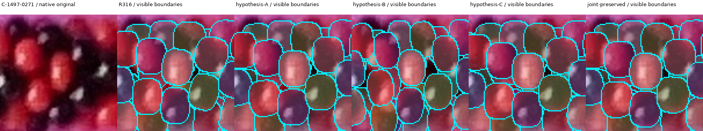
C-1477-0290
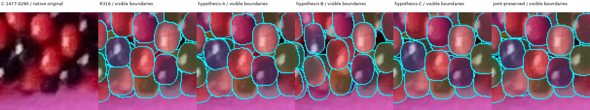
R282-1459-0316
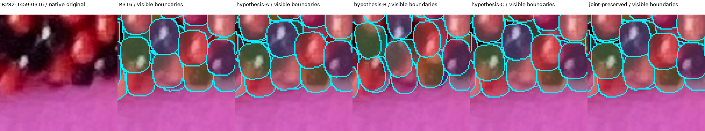
R282-1536-0239
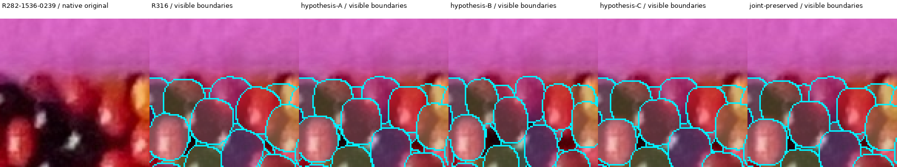
R282-1537-0308
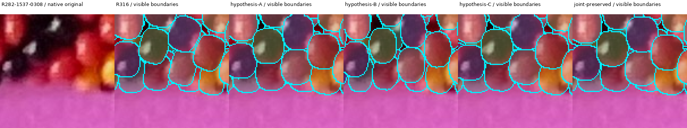
C-1559-0252
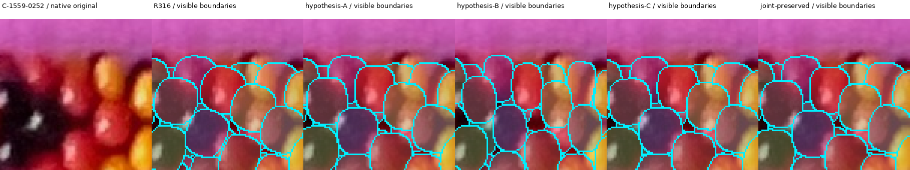
R278-1152-0288
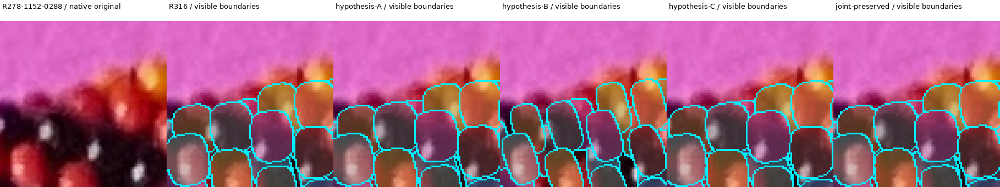
P5-1364-0299
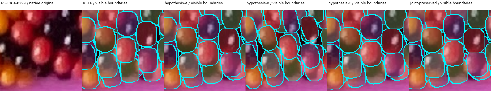
C-1277-0302
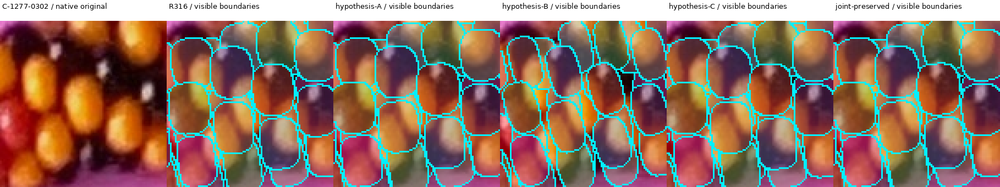
C-1243-0349
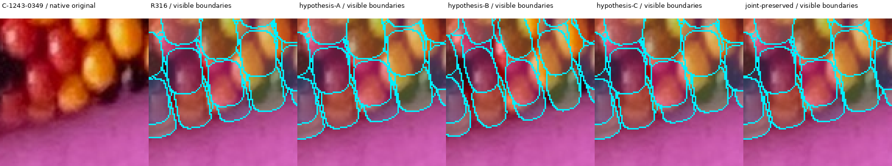
C-1669-0293
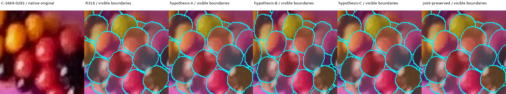
C-1729-0337
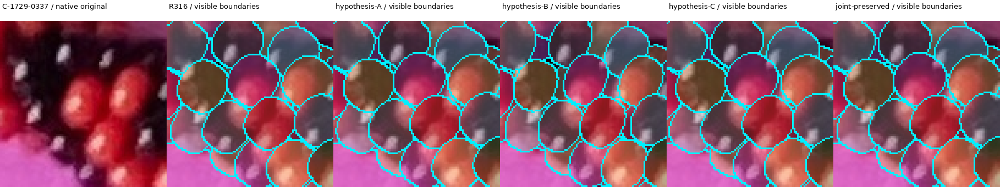
| Core | Photo x,y | Arc px | Conditional owner | Visible | Fixed R316 owner coverage |
|---|---|---|---|---|---|
| C-1116-0328 | 1120.2, 327.0 | -382.4 | -97 | 90.0% | -97: 90.0% |
| C-1130-0364 | 1135.0, 365.3 | -377.8 | -99 | 31.3% | -99: 31.3% |
| C-1145-0338 | 1149.3, 339.9 | -357.5 | -91 | 65.6% | -91: 65.6% |
| R278-1152-0288 | 1155.4, 287.9 | -339.1 | -89 | 23.3% | -89: 23.3% |
| C-1178-0292 | 1180.4, 289.4 | -315.4 | -83 | 51.4% | -83: 51.4% |
| R282-1202-0350 | 1205.1, 352.0 | -305.8 | -79 | 80.7% | -79: 80.7% |
| C-1196-0273 | 1200.8, 274.2 | -292.3 | -77 | 39.2% | -77: 39.2% |
| C-1205-0305 | 1209.5, 304.5 | -290.8 | -71 | 42.7% | -71: 42.7% |
| C-1221-0282 | 1226.1, 280.4 | -269.4 | -70 | 59.8% | -70: 59.8% |
| accepted:H-1235-0312 | 1238.7, 313.8 | -264.3 | -65 | 57.8% | -65: 57.8% |
| C-1235-0312 | 1239.0, 312.6 | -263.8 | -65 | 70.3% | -65: 70.3% |
| C-1243-0349 | 1247.6, 343.5 | -262.0 | -66 | 97.6% | -66: 97.6% |
| C-1251-0290 | 1255.1, 290.3 | -243.4 | -64 | 35.9% | -64: 35.9% |
| C-1259-0324 | 1262.9, 325.2 | -243.0 | -59 | 54.1% | -59: 54.1% |
| C-1277-0302 | 1281.7, 302.4 | -219.8 | -59 | 26.4% | -59: 26.4% |
| C-1279-0252 | 1284.0, 254.1 | -208.4 | -57 | 36.9% | -57: 36.9% |
| C-1311-0261 | 1315.6, 262.0 | -179.4 | -45 | 61.2% | -45: 61.2% |
| C-1339-0277 | 1344.0, 275.5 | -154.0 | -39 | 81.9% | -39: 81.9% |
| P5-1364-0299 | 1368.8, 298.3 | -133.0 | -33 | 97.1% | -33: 97.1% |
| C-1391-0312 | 1395.2, 314.2 | -108.6 | -27 | 90.3% | -27: 90.3% |
| R282-1459-0316 | 1459.7, 313.3 | -42.3 | -14 | 71.9% | -14: 71.9% |
| C-1477-0290 | 1480.4, 291.2 | -19.8 | -7 | 85.1% | -7: 85.1% |
| C-1497-0271 | 1499.4, 271.2 | 0.0 | 0 | 87.9% | 0: 87.9% |
| R282-1536-0239 | 1537.9, 235.8 | 37.3 | 8 | 77.7% | 8: 77.7% |
| R282-1537-0308 | 1539.0, 310.0 | 40.8 | 12 | 63.3% | 12: 63.3% |
| C-1559-0252 | 1563.8, 250.5 | 62.4 | 14 | 78.6% | 14: 78.6% |
| C-1582-0235 | 1586.4, 241.2 | 82.8 | 21 | 49.0% | 21: 49.0% |
| C-1585-0307 | 1590.0, 307.1 | 94.8 | 25 | 95.1% | 25: 95.1% |
| C-1608-0253 | 1612.8, 252.7 | 108.6 | 27 | 92.9% | 27: 92.9% |
| E5-1607-0290 | 1611.1, 289.8 | 113.5 | 32 | 73.6% | 32: 73.6% |
| E5-1633-0278 | 1636.9, 277.9 | 136.0 | 39 | 56.1% | 39: 56.1% |
| C-1659-0261 | 1660.6, 263.4 | 153.8 | 40 | 77.9% | 40: 77.9% |
| C-1669-0293 | 1671.5, 293.6 | 172.9 | 45 | 42.1% | 45: 42.1% |
| E5-1671-0325 | 1674.7, 325.8 | 187.9 | 51 | 78.6% | 51: 78.6% |
| R282-1698-0280 | 1698.6, 279.1 | 192.0 | 53 | 39.9% | 53: 39.9% |
| R282-1726-0280 | 1726.4, 279.1 | 215.7 | 53 | 50.7% | 53: 50.7% |
| C-1729-0337 | 1734.8, 336.6 | 248.6 | 65 | 45.2% | 65: 45.2% |
| E5-1757-0332 | 1759.0, 331.9 | 267.1 | 72 | 58.8% | 72: 58.8% |
| E5-1785-0383 | 1786.7, 384.1 | 319.4 | 84 | 60.8% | 84: 60.8% |
| R282-1829-0358 | 1832.4, 359.5 | 341.4 | 92 | 57.6% | 92: 57.6% |
| Core | Photo x,y | Arc px | Conditional owner | Visible | Fixed R316 owner coverage |
|---|---|---|---|---|---|
| C-1116-0328 | 1120.2, 327.0 | -382.4 | -97 | 85.8% | -97: 85.8% |
| C-1130-0364 | 1135.0, 365.3 | -377.8 | -92 | 45.6% | -99: 29.3% |
| C-1145-0338 | 1149.3, 339.9 | -357.5 | -91 | 59.2% | -91: 59.2% |
| R278-1152-0288 | 1155.4, 287.9 | -339.1 | -83 | 25.2% | -89: 20.3% |
| C-1178-0292 | 1180.4, 289.4 | -315.4 | -77 | 49.8% | -83: 46.5% |
| R282-1202-0350 | 1205.1, 352.0 | -305.8 | -79 | 75.6% | -79: 75.6% |
| C-1196-0273 | 1200.8, 274.2 | -292.3 | -77 | 37.1% | -77: 37.1% |
| C-1205-0305 | 1209.5, 304.5 | -290.8 | -71 | 46.8% | -71: 46.8% |
| C-1221-0282 | 1226.1, 280.4 | -269.4 | -70 | 58.4% | -70: 58.4% |
| accepted:H-1235-0312 | 1238.7, 313.8 | -264.3 | -65 | 62.2% | -65: 62.2% |
| C-1235-0312 | 1239.0, 312.6 | -263.8 | -65 | 73.3% | -65: 73.3% |
| C-1243-0349 | 1247.6, 343.5 | -262.0 | -66 | 97.6% | -66: 97.6% |
| C-1251-0290 | 1255.1, 290.3 | -243.4 | -64 | 31.2% | -64: 31.2% |
| C-1259-0324 | 1262.9, 325.2 | -243.0 | -59 | 58.5% | -59: 58.5% |
| C-1277-0302 | 1281.7, 302.4 | -219.8 | -52 | 30.9% | -59: 24.9% |
| C-1279-0252 | 1284.0, 254.1 | -208.4 | -57 | 32.9% | -57: 32.9% |
| C-1311-0261 | 1315.6, 262.0 | -179.4 | -45 | 64.9% | -45: 64.9% |
| C-1339-0277 | 1344.0, 275.5 | -154.0 | -39 | 81.1% | -39: 81.1% |
| P5-1364-0299 | 1368.8, 298.3 | -133.0 | -33 | 93.8% | -33: 93.8% |
| C-1391-0312 | 1395.2, 314.2 | -108.6 | -27 | 92.9% | -27: 92.9% |
| R282-1459-0316 | 1459.7, 313.3 | -42.3 | -14 | 73.9% | -14: 73.9% |
| C-1477-0290 | 1480.4, 291.2 | -19.8 | -7 | 83.2% | -7: 83.2% |
| C-1497-0271 | 1499.4, 271.2 | 0.0 | 0 | 93.3% | 0: 93.3% |
| R282-1536-0239 | 1537.9, 235.8 | 37.3 | 8 | 76.1% | 8: 76.1% |
| R282-1537-0308 | 1539.0, 310.0 | 40.8 | 12 | 70.6% | 12: 70.6% |
| C-1559-0252 | 1563.8, 250.5 | 62.4 | 14 | 76.9% | 14: 76.9% |
| C-1582-0235 | 1586.4, 241.2 | 82.8 | 21 | 39.7% | 21: 39.7% |
| C-1585-0307 | 1590.0, 307.1 | 94.8 | 25 | 96.2% | 25: 96.2% |
| C-1608-0253 | 1612.8, 252.7 | 108.6 | 27 | 90.3% | 27: 90.3% |
| E5-1607-0290 | 1611.1, 289.8 | 113.5 | 32 | 78.0% | 32: 78.0% |
| E5-1633-0278 | 1636.9, 277.9 | 136.0 | 39 | 58.6% | 39: 58.6% |
| C-1659-0261 | 1660.6, 263.4 | 153.8 | 40 | 75.3% | 40: 75.3% |
| C-1669-0293 | 1671.5, 293.6 | 172.9 | 45 | 42.3% | 45: 42.3% |
| E5-1671-0325 | 1674.7, 325.8 | 187.9 | 51 | 82.4% | 51: 82.4% |
| R282-1698-0280 | 1698.6, 279.1 | 192.0 | 53 | 39.4% | 53: 39.4% |
| R282-1726-0280 | 1726.4, 279.1 | 215.7 | 53 | 52.6% | 53: 52.6% |
| C-1729-0337 | 1734.8, 336.6 | 248.6 | 65 | 41.1% | 65: 41.1% |
| E5-1757-0332 | 1759.0, 331.9 | 267.1 | 72 | 56.3% | 72: 56.3% |
| E5-1785-0383 | 1786.7, 384.1 | 319.4 | 84 | 54.0% | 84: 54.0% |
| R282-1829-0358 | 1832.4, 359.5 | 341.4 | 92 | 64.5% | 92: 64.5% |
| Core | Photo x,y | Arc px | Conditional owner | Visible | Fixed R316 owner coverage |
|---|---|---|---|---|---|
| C-1116-0328 | 1120.2, 327.0 | -382.4 | -97 | 84.8% | -97: 84.8% |
| C-1130-0364 | 1135.0, 365.3 | -377.8 | -99 | 30.1% | -99: 30.1% |
| C-1145-0338 | 1149.3, 339.9 | -357.5 | -91 | 55.9% | -91: 55.9% |
| R278-1152-0288 | 1155.4, 287.9 | -339.1 | -89 | 34.2% | -89: 34.2% |
| C-1178-0292 | 1180.4, 289.4 | -315.4 | -83 | 52.3% | -83: 52.3% |
| R282-1202-0350 | 1205.1, 352.0 | -305.8 | -79 | 72.4% | -79: 72.4% |
| C-1196-0273 | 1200.8, 274.2 | -292.3 | -76 | 32.7% | -77: 26.9% |
| C-1205-0305 | 1209.5, 304.5 | -290.8 | -71 | 26.2% | -71: 26.2% |
| C-1221-0282 | 1226.1, 280.4 | -269.4 | -70 | 76.6% | -70: 76.6% |
| accepted:H-1235-0312 | 1238.7, 313.8 | -264.3 | -65 | 47.4% | -65: 47.4% |
| C-1235-0312 | 1239.0, 312.6 | -263.8 | -65 | 68.3% | -65: 68.3% |
| C-1243-0349 | 1247.6, 343.5 | -262.0 | -66 | 86.6% | -66: 86.6% |
| C-1251-0290 | 1255.1, 290.3 | -243.4 | -64 | 32.5% | -64: 32.5% |
| C-1259-0324 | 1262.9, 325.2 | -243.0 | -59 | 42.4% | -59: 42.4% |
| C-1277-0302 | 1281.7, 302.4 | -219.8 | -59 | 18.6% | -59: 18.6% |
| C-1279-0252 | 1284.0, 254.1 | -208.4 | -57 | 31.3% | -57: 31.3% |
| C-1311-0261 | 1315.6, 262.0 | -179.4 | -45 | 58.8% | -45: 58.8% |
| C-1339-0277 | 1344.0, 275.5 | -154.0 | -39 | 85.9% | -39: 85.9% |
| P5-1364-0299 | 1368.8, 298.3 | -133.0 | -33 | 82.1% | -33: 82.1% |
| C-1391-0312 | 1395.2, 314.2 | -108.6 | -27 | 64.0% | -27: 64.0% |
| R282-1459-0316 | 1459.7, 313.3 | -42.3 | -15 | 46.1% | -14: 20.3% |
| C-1477-0290 | 1480.4, 291.2 | -19.8 | -7 | 54.3% | -7: 54.3% |
| C-1497-0271 | 1499.4, 271.2 | 0.0 | 0 | 88.7% | 0: 88.7% |
| R282-1536-0239 | 1537.9, 235.8 | 37.3 | 8 | 73.2% | 8: 73.2% |
| R282-1537-0308 | 1539.0, 310.0 | 40.8 | 12 | 62.0% | 12: 62.0% |
| C-1559-0252 | 1563.8, 250.5 | 62.4 | 14 | 85.4% | 14: 85.4% |
| C-1582-0235 | 1586.4, 241.2 | 82.8 | 20 | 30.7% | 21: 30.7% |
| C-1585-0307 | 1590.0, 307.1 | 94.8 | 25 | 91.3% | 25: 91.3% |
| C-1608-0253 | 1612.8, 252.7 | 108.6 | 27 | 92.2% | 27: 92.2% |
| E5-1607-0290 | 1611.1, 289.8 | 113.5 | 32 | 70.9% | 32: 70.9% |
| E5-1633-0278 | 1636.9, 277.9 | 136.0 | 39 | 47.9% | 39: 47.9% |
| C-1659-0261 | 1660.6, 263.4 | 153.8 | 40 | 69.3% | 40: 69.3% |
| C-1669-0293 | 1671.5, 293.6 | 172.9 | 45 | 37.6% | 45: 37.6% |
| E5-1671-0325 | 1674.7, 325.8 | 187.9 | 51 | 76.4% | 51: 76.4% |
| R282-1698-0280 | 1698.6, 279.1 | 192.0 | 47 | 55.7% | 53: 28.1% |
| R282-1726-0280 | 1726.4, 279.1 | 215.7 | 53 | 43.6% | 53: 43.6% |
| C-1729-0337 | 1734.8, 336.6 | 248.6 | 65 | 43.2% | 65: 43.2% |
| E5-1757-0332 | 1759.0, 331.9 | 267.1 | 72 | 57.3% | 72: 57.3% |
| E5-1785-0383 | 1786.7, 384.1 | 319.4 | 84 | 48.7% | 84: 48.7% |
| R282-1829-0358 | 1832.4, 359.5 | 341.4 | 92 | 42.8% | 92: 42.8% |
| Core | Photo x,y | Arc px | Conditional owner | Visible | Fixed R316 owner coverage |
|---|---|---|---|---|---|
| C-1116-0328 | 1120.2, 327.0 | -382.4 | -97 | 85.1% | -97: 85.1% |
| C-1130-0364 | 1135.0, 365.3 | -377.8 | -92 | 50.2% | -99: 23.6% |
| C-1145-0338 | 1149.3, 339.9 | -357.5 | -91 | 55.4% | -91: 55.4% |
| R278-1152-0288 | 1155.4, 287.9 | -339.1 | -83 | 28.6% | -89: 19.6% |
| C-1178-0292 | 1180.4, 289.4 | -315.4 | -77 | 54.9% | -83: 42.8% |
| R282-1202-0350 | 1205.1, 352.0 | -305.8 | -79 | 70.9% | -79: 70.9% |
| C-1196-0273 | 1200.8, 274.2 | -292.3 | -77 | 33.9% | -77: 33.9% |
| C-1205-0305 | 1209.5, 304.5 | -290.8 | -71 | 51.5% | -71: 51.5% |
| C-1221-0282 | 1226.1, 280.4 | -269.4 | -70 | 56.6% | -70: 56.6% |
| accepted:H-1235-0312 | 1238.7, 313.8 | -264.3 | -65 | 65.3% | -65: 65.3% |
| C-1235-0312 | 1239.0, 312.6 | -263.8 | -65 | 73.3% | -65: 73.3% |
| C-1243-0349 | 1247.6, 343.5 | -262.0 | -66 | 99.6% | -66: 99.6% |
| C-1251-0290 | 1255.1, 290.3 | -243.4 | -58 | 33.3% | -64: 26.8% |
| C-1259-0324 | 1262.9, 325.2 | -243.0 | -59 | 62.5% | -59: 62.5% |
| C-1277-0302 | 1281.7, 302.4 | -219.8 | -52 | 34.9% | -59: 22.1% |
| C-1279-0252 | 1284.0, 254.1 | -208.4 | -57 | 30.2% | -57: 30.2% |
| C-1311-0261 | 1315.6, 262.0 | -179.4 | -45 | 65.4% | -45: 65.4% |
| C-1339-0277 | 1344.0, 275.5 | -154.0 | -39 | 81.4% | -39: 81.4% |
| P5-1364-0299 | 1368.8, 298.3 | -133.0 | -33 | 92.9% | -33: 92.9% |
| C-1391-0312 | 1395.2, 314.2 | -108.6 | -27 | 94.8% | -27: 94.8% |
| R282-1459-0316 | 1459.7, 313.3 | -42.3 | -14 | 73.9% | -14: 73.9% |
| C-1477-0290 | 1480.4, 291.2 | -19.8 | -7 | 79.2% | -7: 79.2% |
| C-1497-0271 | 1499.4, 271.2 | 0.0 | 0 | 98.9% | 0: 98.9% |
| R282-1536-0239 | 1537.9, 235.8 | 37.3 | 8 | 79.3% | 8: 79.3% |
| R282-1537-0308 | 1539.0, 310.0 | 40.8 | 12 | 73.5% | 12: 73.5% |
| C-1559-0252 | 1563.8, 250.5 | 62.4 | 14 | 74.8% | 14: 74.8% |
| C-1582-0235 | 1586.4, 241.2 | 82.8 | 21 | 39.7% | 21: 39.7% |
| C-1585-0307 | 1590.0, 307.1 | 94.8 | 25 | 97.2% | 25: 97.2% |
| C-1608-0253 | 1612.8, 252.7 | 108.6 | 27 | 90.6% | 27: 90.6% |
| E5-1607-0290 | 1611.1, 289.8 | 113.5 | 32 | 79.1% | 32: 79.1% |
| E5-1633-0278 | 1636.9, 277.9 | 136.0 | 39 | 60.1% | 39: 60.1% |
| C-1659-0261 | 1660.6, 263.4 | 153.8 | 40 | 78.3% | 40: 78.3% |
| C-1669-0293 | 1671.5, 293.6 | 172.9 | 45 | 41.7% | 45: 41.7% |
| E5-1671-0325 | 1674.7, 325.8 | 187.9 | 51 | 82.9% | 51: 82.9% |
| R282-1698-0280 | 1698.6, 279.1 | 192.0 | 53 | 41.8% | 53: 41.8% |
| R282-1726-0280 | 1726.4, 279.1 | 215.7 | 53 | 48.8% | 53: 48.8% |
| C-1729-0337 | 1734.8, 336.6 | 248.6 | 65 | 41.3% | 65: 41.3% |
| E5-1757-0332 | 1759.0, 331.9 | 267.1 | 72 | 56.5% | 72: 56.5% |
| E5-1785-0383 | 1786.7, 384.1 | 319.4 | 84 | 54.5% | 84: 54.5% |
| R282-1829-0358 | 1832.4, 359.5 | 341.4 | 92 | 67.6% | 92: 67.6% |
| Core | Photo x,y | Arc px | Conditional owner | Visible | Fixed R316 owner coverage |
|---|---|---|---|---|---|
| C-1116-0328 | 1120.2, 327.0 | -382.4 | -97 | 86.5% | -97: 86.5% |
| C-1130-0364 | 1135.0, 365.3 | -377.8 | -92 | 42.9% | -99: 29.7% |
| C-1145-0338 | 1149.3, 339.9 | -357.5 | -91 | 59.2% | -91: 59.2% |
| R278-1152-0288 | 1155.4, 287.9 | -339.1 | -83 | 23.9% | -89: 19.9% |
| C-1178-0292 | 1180.4, 289.4 | -315.4 | -77 | 49.1% | -83: 46.8% |
| R282-1202-0350 | 1205.1, 352.0 | -305.8 | -79 | 76.4% | -79: 76.4% |
| C-1196-0273 | 1200.8, 274.2 | -292.3 | -77 | 38.0% | -77: 38.0% |
| C-1205-0305 | 1209.5, 304.5 | -290.8 | -71 | 45.6% | -71: 45.6% |
| C-1221-0282 | 1226.1, 280.4 | -269.4 | -70 | 58.1% | -70: 58.1% |
| accepted:H-1235-0312 | 1238.7, 313.8 | -264.3 | -65 | 61.4% | -65: 61.4% |
| C-1235-0312 | 1239.0, 312.6 | -263.8 | -65 | 73.3% | -65: 73.3% |
| C-1243-0349 | 1247.6, 343.5 | -262.0 | -66 | 98.0% | -66: 98.0% |
| C-1251-0290 | 1255.1, 290.3 | -243.4 | -64 | 32.0% | -64: 32.0% |
| C-1259-0324 | 1262.9, 325.2 | -243.0 | -59 | 57.6% | -59: 57.6% |
| C-1277-0302 | 1281.7, 302.4 | -219.8 | -52 | 29.9% | -59: 25.9% |
| C-1279-0252 | 1284.0, 254.1 | -208.4 | -57 | 33.7% | -57: 33.7% |
| C-1311-0261 | 1315.6, 262.0 | -179.4 | -45 | 64.0% | -45: 64.0% |
| C-1339-0277 | 1344.0, 275.5 | -154.0 | -39 | 80.8% | -39: 80.8% |
| P5-1364-0299 | 1368.8, 298.3 | -133.0 | -33 | 92.9% | -33: 92.9% |
| C-1391-0312 | 1395.2, 314.2 | -108.6 | -27 | 91.8% | -27: 91.8% |
| R282-1459-0316 | 1459.7, 313.3 | -42.3 | -14 | 76.9% | -14: 76.9% |
| C-1477-0290 | 1480.4, 291.2 | -19.8 | -7 | 87.9% | -7: 87.9% |
| C-1497-0271 | 1499.4, 271.2 | 0.0 | 0 | 98.9% | 0: 98.9% |
| R282-1536-0239 | 1537.9, 235.8 | 37.3 | 8 | 83.8% | 8: 83.8% |
| R282-1537-0308 | 1539.0, 310.0 | 40.8 | 12 | 69.9% | 12: 69.9% |
| C-1559-0252 | 1563.8, 250.5 | 62.4 | 14 | 78.9% | 14: 78.9% |
| C-1582-0235 | 1586.4, 241.2 | 82.8 | 21 | 39.7% | 21: 39.7% |
| C-1585-0307 | 1590.0, 307.1 | 94.8 | 25 | 94.6% | 25: 94.6% |
| C-1608-0253 | 1612.8, 252.7 | 108.6 | 27 | 91.6% | 27: 91.6% |
| E5-1607-0290 | 1611.1, 289.8 | 113.5 | 32 | 76.7% | 32: 76.7% |
| E5-1633-0278 | 1636.9, 277.9 | 136.0 | 39 | 57.1% | 39: 57.1% |
| C-1659-0261 | 1660.6, 263.4 | 153.8 | 40 | 74.3% | 40: 74.3% |
| C-1669-0293 | 1671.5, 293.6 | 172.9 | 45 | 43.4% | 45: 43.4% |
| E5-1671-0325 | 1674.7, 325.8 | 187.9 | 51 | 81.3% | 51: 81.3% |
| R282-1698-0280 | 1698.6, 279.1 | 192.0 | 53 | 37.4% | 53: 37.4% |
| R282-1726-0280 | 1726.4, 279.1 | 215.7 | 53 | 54.0% | 53: 54.0% |
| C-1729-0337 | 1734.8, 336.6 | 248.6 | 65 | 40.8% | 65: 40.8% |
| E5-1757-0332 | 1759.0, 331.9 | 267.1 | 72 | 56.8% | 72: 56.8% |
| E5-1785-0383 | 1786.7, 384.1 | 319.4 | 84 | 54.5% | 84: 54.5% |
| R282-1829-0358 | 1832.4, 359.5 | 341.4 | 92 | 62.4% | 92: 62.4% |